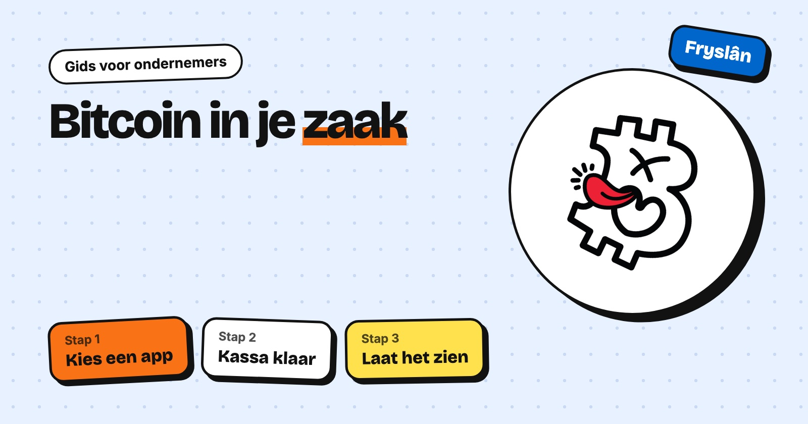

Bitcoin accepteren in je zaak: een stappenplan voor Friese ondernemers

Bitcoin accepteren in je winkel of horecazaak is eenvoudiger dan je denkt. Je hebt geen dure kassa of technische kennis nodig, en je kunt klein beginnen. Waarom het interessant is voor je zaak, lees je op de pagina Bitcoin accepteren in je zaak. In deze gids lees je hoe je het aanpakt.
1. Kies een betaaloplossing
Er zijn verschillende manieren. Coinos is snel ingesteld en ontvangt on-chain en Lightning; Coinos bewaart je bitcoin voor je. Wallet of Satoshi is een eenvoudige Lightning-app waarin je zelf je sleutels beheert. BTCPay Server geeft je volledige controle, maar vraagt meer technische kennis. Lightning Checkout biedt een kassa-app in de browser, een koppeling voor WooCommerce-webshops en dagelijkse uitbetaling. Verschillende Friese winkeliers hebben goede ervaring met Coinos.
2. Zet je kassa klaar
Een telefoon of tablet bij de kassa is genoeg. Je vult het bedrag in euro’s in, de app maakt een QR-code en de klant scant die met zijn wallet. Binnen een paar seconden is de betaling binnen. Doe eerst een testbetaling met een klein bedrag en leg je personeel uit hoe het werkt.
3. Regel je boekhouding
In Nederland wordt bitcoin over het algemeen behandeld als een actief. Ontvang je bitcoin als betaling, leg dan de eurowaarde vast op het moment van de transactie. Belastingregels kunnen wijzigen: overleg met je accountant of belastingadviseur hoe je het in jouw situatie verwerkt.
4. Houden of omzetten?
Jij bepaalt of je ontvangen bitcoin bewaart of omzet naar euro’s, bijvoorbeeld via een exchange. Bedenk dat de koers van bitcoin flink kan schommelen. Wie alleen de euro-omzet wil houden, zet ontvangen bedragen regelmatig om.
5. Laat het je klanten weten
Een "Betaal hier met Bitcoin"-sticker op de deur valt Bitcoiners meteen op. Op de Bitcoin Kaart van Bitcoin Friesland vinden ze je zaak. Mail ons via hoi@bitcoinfriesland.com, dan bespreken we hoe je zaak op de kaart komt.
Kort samengevat
Kies een app, doe een testbetaling, spreek met je accountant af hoe je het boekt en laat zien dat je bitcoin accepteert. Bitcoin Friesland is een vrijwillige community en geeft geen betaald advies, maar helpt je graag op weg.
Sluit je aan bij de Bitcoin Friesland community
Let op: deze informatie is uitsluitend bedoeld voor educatieve doeleinden en vormt geen financieel advies. Bitcoin-koersen kunnen sterk schommelen.